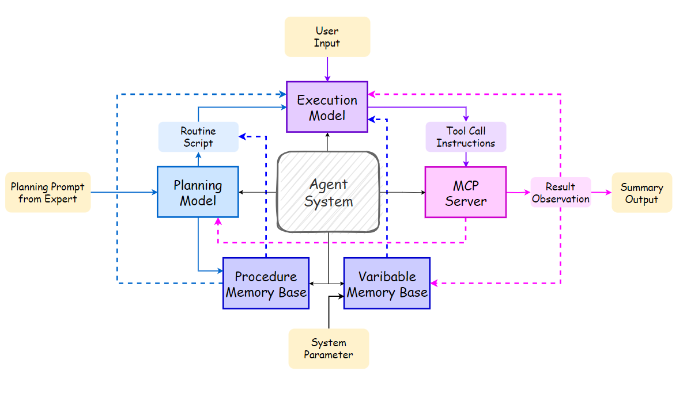
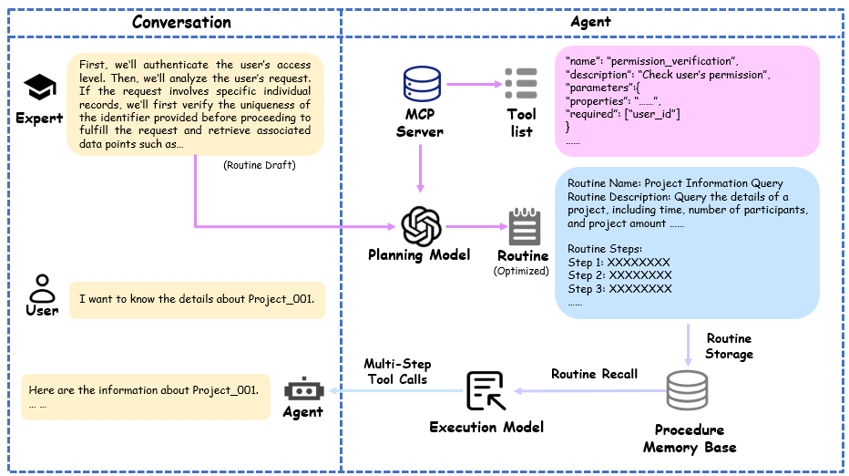
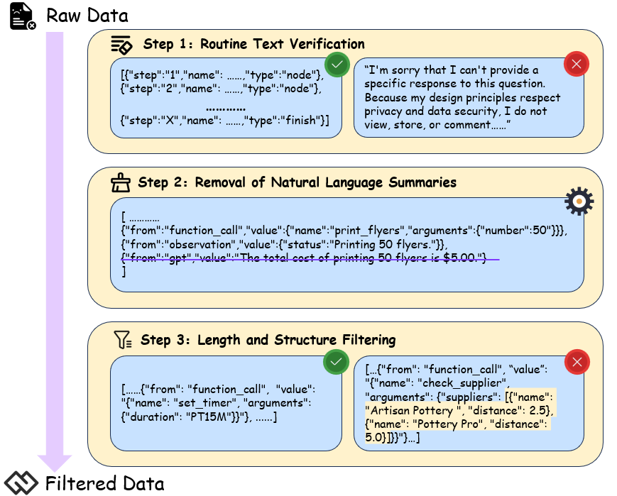
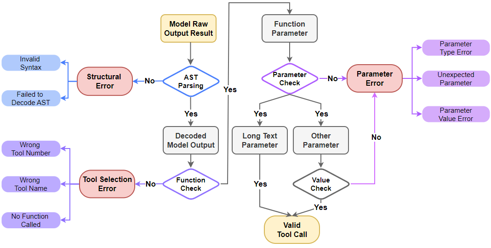

Guancheng Zeng∗1∗∗∗，Xueyi Chen，Jiawang Hu，Shaohua Qi，Yaxuan Mao，Zhantao Wang，Yifan Nie，Shuang Li，Qiuyang Feng，Pengxu Qiu，Yujia Wang，Wenqiang Han，Linyan Huang，Gang Li，Jingjing Mo，和 Haowen Hu†2
Digital China AI Research
{cenggc12，huhwa}@digitalchina.com
智能体系统在企业环境中的部署往往受到若干挑战的阻碍：通用模型缺乏特定领域的流程知识，导致计划混乱、遗漏关键工具以及执行稳定性差。为了解决这个问题，本文介绍了Routine，这是一个多步骤智能体规划框架，具有清晰的结构、明确的指令和无缝的参数传递，用于指导智能体的执行模块以高稳定性执行多步骤工具调用任务。在真实企业场景中进行的评估中，Routine显著提高了模型工具调用的执行准确性，将GPT-4o的性能从41.1%提升到96.3%，将Qwen3-14B从32.6%提升到83.3%。我们进一步构建了一个遵循Routine的训练数据集并对Qwen3-14B进行了微调，在场景特定评估中准确率提升到88.2%，表明对执行计划的遵循性得到改善。此外，我们采用基于Routine的蒸馏方法创建了场景特定的多步骤工具调用数据集。在这个蒸馏数据集上进行微调使模型的准确率提升到95.5%，接近GPT-4o的性能。这些结果突出了Routine在蒸馏特定领域工具使用模式和增强模型对新场景适应性方面的有效性。我们的实验结果表明，Routine为构建稳定的智能体工作流程提供了一种实用且易于获得的方法，加速了智能体系统在企业环境中的部署和采用，推进了AI for Process的技术愿景。
[arXiv:2507.14447v2 [cs.AI] 22 Jul 2025]
自主智能体的出现推动了行业中各种框架和功能模块的积极发展，为该领域带来了多样化的结构和能力[1]。随着研究和实际应用的进展，智能体架构逐渐向更稳定的设计收敛。典型的智能体系统由四个关键模块组成：规划、执行、工具和记忆；它们协作完成复杂任务并与用户保持连贯的交互[2]。这些模块通常由大语言模型(LLMs)驱动，使智能体能够适应常见场景并执行数据分析、报告总结和Web界面操作等任务，具有强大的泛化和生成能力[3, 4, 5]。众多高性能和创新的智能体应用已经出现，展示了基于LLM的智能体系统在实际应用中的潜力[6]。
∗贡献相等。
†通讯作者
预印本。审查中。
然而，在企业特定场景中，由于智能体系统无法与场景特定工具可靠集成并有效解决现实世界任务，实施智能体系统仍然困难[7]。常见的规划模型往往无法生成稳健的执行计划，并倾向于忽略基本工具——特别是那些涉及权限验证和模型生成的工具——这是由于缺乏场景特定知识[8]。现实世界场景中工具描述不充分进一步加剧了这个问题，使模型难以选择合适的工具和参数，导致任务执行不稳定[9]。此外，当前的智能体规划缺乏统一、结构化和完整的格式[8, 10, 11]。因此，智能体经常以自定义格式传递给执行模块，执行模块必须在没有清晰结构指导的情况下推断工具调用指令[12]。这种模糊性导致规划步骤和工具调用之间的不匹配。虽然低代码平台提供了更稳定的替代方案，但它们仍然严重依赖人工工作，限制了工作流程开发的效率[13, 14]。
在本文中，我们提出了Routine[15]，一个用于智能体的结构化规划框架来解决上述问题；其机制如图1所示[8, 16]。给定专家的规划提示，规划模型细化程序的细节并将其转换为格式良好的自然语言Routine，然后传递给执行模型执行多步骤工具调用并解决用户问题。在实验中，GPT-4o在场景特定测试集上使用Routine规划达到了96.3%的总体准确率，显著优于不使用Routine时41.1%的准确率。类似地，Qwen3-14B的性能从32.6%提升到83.3%。
此外，我们基于开放的多工具数据集[3]，通过Routine生成合成了总计4,209个通用训练数据。训练后，Qwen3-14B达到了88.2%的准确率，进一步提高了其Routine指令跟随能力。另外，我们在真实企业场景中基于Routine执行数据蒸馏，生成了537个场景特定的单轮多步骤工具调用样本。在这个蒸馏数据集上训练的Qwen3-14B在测试集上达到了95.5%的准确率，接近GPT-4o的96.3%，展示了使用基于Routine的蒸馏来适应执行模型到特定流程的潜力。
总结来说，我们的贡献包括：
企业场景中代理系统的分步工具调用；
我们生成了符合Routine规范的训练数据集并微调模型，以提高执行模块遵循规划指令的能力；
我们进行基于Routine的知识蒸馏，生成特定场景的多工具数据集，提高了执行模型的准确性。
这些结果证明了Routine在增强代理系统解决特定场景复杂问题的稳定性和准确性方面的有效性。
LLM和代理为企业提高运营效率引入了潜在方法，特别是通过实现智能自动化和决策支持[17]。从2023年到2024年，基于LLM的代理实践的第一波浪潮以几个探索性系统的出现为标志，如AutoGPT，一个任务列表驱动的自主代理[18]，BabyAGI，一个能够动态目标生成和优先级排序的任务管理器[19]，以及AutoGen，一个利用GraphFlow将执行建模为工具调用DAG的多代理框架，确保可追踪和可靠的流程流[20]。总的来说，这些系统强调了使用LLM进行自主推理、任务分解和多步骤工具编排的可行性。同时，这些项目突出了早期架构的局限性，包括上下文管理效率低下[21]、执行流程碎片化[21]和任务完成成功率的变异性[22]——特别是由于步骤爆炸和频繁执行循环导致的运行成本的大幅变异[23, 24]。
针对这些局限性，2025年出现了基于LLM的代理开发第二波浪潮，将研究重点转向提高代理的稳定性、可靠性和企业适用性。代表性系统采用了面向生产的代理架构，具有模块化和协作设计[25, 26]。这些系统遵循先规划后行动的范式，其中高级任务规划先于个别子任务的动态选择和执行[27, 28]。这种范式在规范规划的同时保持了执行灵活性，标志着向实际部署的实用和可控代理系统迈出了重要一步。例如，Manus采用三阶段管道：规划器、执行器和验证器，以确保准确性和可追溯性[25]。
尽管取得了这些进展，许多现有系统仍然以非结构化或半结构化自然语言表示规划，这阻碍了流程的验证、调试和重用[29, 30]。在实践中，这在执行过程中引入了歧义，阻碍了静态验证，并限制了代理跟踪中间状态或从失败中恢复的能力。为了解决这些挑战，我们提出了Routine——一种结构化的规划脚本，作为LLM生成的规划和执行引擎之间的中间表示，增强执行模型的指令遵循能力。
模型规模的增加带来了LLM的上下文学习能力[31]。通过在系统提示中提供任务特定的规则和输出约束，LLM可以解释指令并适应具体任务。随着提示工程显示出巨大的实用价值，研究人员越来越关注指令遵循，产生了专门的训练方案和评估协议[32, 33, 34]。
Google DeepMind推出了IFEval[35]，提供25个可验证指令和500个提示，提供了标准化基线。然而，它对任务链、状态依赖和复合约束的覆盖仍然有限。为了超越这种扁平的评估表面，清华大学提出了ComplexBench[36]。通过在19个约束维度上结合链式、并行和嵌套结构，ComplexBench显示GPT-4在链式结构和深度嵌套选择上的准确性显著下降，突出了结构感知和分布泛化的弱点。
为了在复杂约束下加强对齐，通义实验室提出了IOPO(输入-输出偏好优化)并发布了TRACE基准[37]。IOPO联合建模来自指令和响应的偏好对，在困难的指令遵循任务上产生显著收益。
字节跳动构建了GuideBench[31]，引入了模拟动态演变领域法规的指导规则。实验表明，主流LLM在细粒度、特定领域规则方面仍然困难。作为替代方案，上下文工程通过结构化提示和添加任务相关线索提供了一种轻量级的方法来改善模型合规性。然而，手动设计仍然不实用，并且在深度结构化或分支任务方面存在困难[4]。
Routine首先在OpenAI Cookbook中介绍[15]。根据Cookbook，Routine能够将指令分解为更小、可管理的任务，从而降低LLM中幻觉的风险，并促进更有效的客户服务解决方案。在我们的研究中，我们为Routine添加了更多组件并进一步优化了其结构，我们也更加关注模型的程序指令遵循能力。通过为模型提供明确编码整个工作流程的结构化Routine格式，我们提高了其遵循规定计划的稳定性。构建将输入与这种Routine表示配对的训练集进一步增强了模型生成符合所需结构输出的能力。

图2. 我们基于Routine的智能体系统框架。首先，系统使用专家标注的规划提示来生成Routines。在运行时，它处理用户输入和系统参数，通过模块间的交互完成任务，最终基于专用摘要工具的观察提供最终摘要。
训练数据的质量和结构对LLM的性能至关重要。然而，收集高质量、人工标注的场景特定数据集需要大量的人力成本。解决这个问题的常见策略是提示LLM合成训练数据，然后用这些数据通过有针对性的后训练来提升模型性能[38]。在工具调用中，数据合成管道对于一致性和有效性至关重要。为此，几项研究提出了数据集生成框架[39, 40, 41, 42]。除了这些努力，Kimi-k2引入了一个可扩展的自动化管道来模拟现实世界的多轮工具使用场景，并生成大规模、多样化和高质量的训练数据集[43]。这些框架主要专注于生成工具调用数据集，以提高模型读取输入和产生标准化工具调用命令的能力，确保工具调用指令的一致输出符合生态系统中普遍接受的结构约定。
尽管有这些进展，常见的工具使用模型在场景特定情况下仍表现不佳。虽然它们保持一致的输出格式，但由于缺乏场景特定知识，它们在选择正确的函数或参数时经常遇到困难[38]。提示工程和使用知识蒸馏构建基于场景的训练数据集可以用来解决这个问题[44]。将关于工具选择和参数配置的专家知识蒸馏到较小的模型中，使轻量级专家智能体能够解决场景特定的任务。
基于企业级工具调用的先前工作，我们之前开发了一个训练管道，通过基于精选工具列表生成任务特定数据来改善单步函数执行[45]。本研究扩展了这项工作，专注于多步工具调用能力。
智能体系统通常包含四个核心模块，它们在单一用户任务上协作：规划、执行、工具和记忆[2]。当接收到任务时，规划模块生成逐步计划。执行模块然后遵循这个计划，为每个步骤生成适当的工具调用指令。工具模块接收这些指令并返回执行结果[46]。记忆模块协助整个智能体，改善执行的连贯性并增强生成。基于我们的Routine和其他优化机制，我们重新设计了这四个主要模块，创建了一个以Routine和多步工具调用机制为中心的智能体系统。该系统的整体架构如图2所示。在本节中，我们将介绍如何设计这些功能模块。
在我们的系统中，Routine的主要目的是增强通用模型处理场景特定任务的稳定性，从而改善模型的指令遵循能力以提高执行准确性。
表1. Routine的组件。注：标有*的组件是可选元素。
| 组件 | 描述 |
|---|---|
| 步骤编号 | 主流程中步骤的顺序编号 |
| 步骤名称 | 步骤目的或功能的简洁总结 |
| 步骤描述 | 步骤的详细指令、执行条件和目标 |
| 输入描述* | 执行此步骤所需参数的描述 |
| 输出描述* | 成功执行后生成的输出参数 |
| 步骤工具* | 此步骤中使用的相应功能工具；只调用一个工具 |
Routine由多个特定的子任务执行步骤组成，这些步骤独立但通常相互关联。因此，Routine执行序列必须包含足够的信息，以便智能体可靠地遵循计划的步骤。完整Routine的组件及其对子任务样本的描述如表1所示。
相似场景的Routine可能包含重叠的步骤，仅在某些流程段落中有所不同，类似于同一工作流的不同分支。在这种情况下，可以通过创建分支步骤和执行条件来合并相似场景，以在一个单一Routine中区分工作流。
以下是带有分支的Routine示例：
步骤X：此步骤执行分支条件检查： • 分支X-1步骤1： 如果<条件>，执行<操作>，使用<工具名称>工具； • 分支X-1步骤2： <操作>，使用<工具名称>工具； • 分支X-2步骤1： 如果<条件>，执行<操作>，使用<工具名称>工具；
步骤Y： <操作>，使用<工具名称>工具；
步骤Z： <操作>，使用<工具名称>工具，并终止工作流；
例如，分支可以表示为”分支X-n步骤i”，代表主步骤X的第n个分支内的第i个步骤。基于这种表示法，执行模型可以确定其在工作流中的当前分支和位置。当工作流在某个步骤后终止时，必须在Routine中相应地描述。这种结构化格式确保每个规划步骤包含清晰完整的信息，便于智能体进行进度跟踪和任务执行。当需要修改工作流时，开发人员可以快速插入、删除或编辑步骤，允许对任务计划进行敏捷调整。Routine的示例可以在附录B中找到。

图3. 人工智能优化和例程管理
3.1.2 AI驱动的例程生成和优化
虽然通用模型可以在开放式场景中有效地将问题分解为自然语言例程，但由于缺乏特定领域知识，它们在企业环境中表现不佳。这使得它们难以在没有领域专家或企业文档协助的情况下直接可靠地生成情境化的例程。
为了提高效率，专家可以提供一个简单的草稿提示，概述特定场景的计划。然后通过配备专门提示模板的模型来优化这个草稿。优化过程包括将计划分解为详细的子步骤，将这些步骤映射到可用工具，最后输出一个结构化且全面的自然语言例程，便于执行模块遵循。整体处理流程如图3所示。这种AI驱动优化的提示模板可在附录A中找到。
3.2 执行模块和小规模LLMs
代理的执行模块负责接收规划模块提供的计划，并按照其规定的路径输出工具调用指令。在大多数代理系统中，规划和执行都由同一个模型处理。由于任务的多样性和复杂性，规划往往需要高性能，消耗大量计算能力和推理时间，需要使用大规模模型[47]。
然而，在企业级代理系统中，执行过程带来大量上下文，包括众多决策节点和可用工具。在每个执行步骤中使用高性能模型会消耗大量资源和时间，使其难以在真实企业环境中部署[48]。
对于执行模块，核心所需能力是多步骤工具调用和指令遵循，而非复杂的逻辑推理或抽象。因此，执行模块可以由更小的专门指令遵循模型驱动。该模型只负责遵循规划模型的计划并输出相应的工具调用指令。执行模型不生成自然语言响应；相反，最终摘要由最后一步的专用摘要工具生成[49]。这种分离确保了摘要和工具调用的提示模板不会相互干扰。
通过提供预定义的计划，由小型专门模型驱动的执行模块可以节省大量资源，从而提高其在现实世界企业代理应用中的可行性[50]。
3.3 工具模块和MCP服务器
工具模块负责接收来自执行模块的工具调用指令，使用这些工具执行任务，并返回执行结果，从而为代理系统提供外部信息。在我们的系统中，我们使用MCP服务器作为工具模块。MCP服务器不仅作为执行模块的资源，还定义和管理代理可用的工具集[5]。
MCP以结构化方式通过其协议定义工具。每个工具都由该协议统一描述，指定其名称、参数类型和调用约束。执行模块只需根据规划模块的逐步指令从MCP工具集中检索目标函数并填入所需参数。这种基于协议的结构不再需要管理工具的实现细节。因此，执行模块只需要根据规划模块提供的计划确定”调用哪个工具”和”传递什么参数”[51]。
此外，工具模块的标准化设计为系统提供了极高的可扩展性，使开发人员能够轻松添加新功能或连接新系统。这允许建立多样化的工具生态系统，包括各种功能、模型、其他代理，甚至用户响应来协助代理。
在具有各种复杂交互工具的企业场景中，MCP工具模块有效地将执行逻辑与工具层解耦，创建了明确的分工：工具模块提供稳定可靠的功能标准和接口，而由小规模模型驱动的执行模块逐步调用这些工具[50]。
3.4 记忆模块：程序和变量
代理系统通常处理大量上下文，包括系统提示、可用工具列表和对话历史[52]。这对模型施加了显著负载：增加的上下文不仅导致更高的推理成本，还会降低模型的注意力准确性。这需要专门的记忆存储和检索机制，为代理提供仅与当前任务最相关的信息[53]。
在我们的代理系统中，我们实现了两种形式的记忆：长期程序记忆和短期变量记忆。
3.4.1 程序记忆
通过AI驱动的例程生成和优化过程，规划模块与领域专家合作创建给定场景所需的例程集合。该集合中的每组例程都设计用于处理特定的子任务。由于单个场景可能包含多个子场景及其相应的例程，将整个集合放入执行模型的系统提示中会显著增加推理成本，并可能通过引入无关信息而降低准确性[47]。
因此，我们为智能代理系统建立了一个程序记忆库。在部署前，专家会将必要的例程(Routines)集合填充到这个记忆库中。当系统收到相关查询时，它会基于例程描述与用户任务之间的相似性计算从记忆库中检索合适的例程，从而协助执行模型[[48]]。
在多步骤工具调用过程中，执行历史逐渐积累。输入和输出参数往往占据上下文窗口的很大一部分，导致参数值过长、参数数量过多、冗余标点符号等问题。这些问题不仅增加了模型上下文窗口的压力，提高了模型产生幻觉的概率，还会导致较小的模型在传递参数时出现涉及括号、引号和转义字符的语法错误[[53]]。
为了有效解决这个问题，我们引入了变量记忆机制，如图所示
图4展示了其核心功能是优化多步骤工具调用之间的参数传递。当工具调用返回过长的参数时，系统会自动将其存储在变量记忆库中。然后模型在填写工具参数时只需提供相应的键，而不是完整的值。收到工具调用请求后，记忆模块会自动将这些键检索回其实际参数值，然后传递给工具[[53]]。变量记忆机制显著减少了上下文压力，同时也减少了token消耗并提高了语法准确性。
需要注意的是，这种变量记忆是非持久性的；所有相关的变量记忆仅用于当前任务的执行。这种设计确保记忆保持轻量和响应性，避免了不必要的存储开销和数据积累，并保证了每个任务执行的独立性[[54]]。
常见模型可以基于其通用的提示跟随能力有效执行例程。然而，即使为每个步骤指定了工具和参数，轻量级模型仍然容易产生幻觉，经常导致错误的工具调用和参数更新[[47]]。为了解决这个问题，可以构建一个通用的例程跟随数据集来增强执行模型的指令跟随能力。此外，例程可以作为数据蒸馏的程序知识：通过使用高容量模型和例程，我们可以生成特定场景的多步骤工具调用训练数据。这些蒸馏数据然后可以用于训练特定场景的执行模型，从而减少它们对显式规划的依赖[[48]]。
在本文中，我们探索了这两种训练策略对提高执行模型能力的影响，旨在确定在实际场景中利用基于例程的规划的最佳方式[[49]]。从数据合成到评估的模型训练完整过程如图5所示。
在这个实验中，我们选择了一个现实世界的企业场景作为测试设置：部署在大型企业（拥有超过8000名员工）内的HR智能代理应用。在这个场景中，HR用户与智能代理交互，查询企业内员工和部门的相关信息[[45]]。
HR智能代理场景包含七个子场景，每个都由一个独特的例程指导，用于指导执行模型完成用户查询，因此需要七个相应的例程。在这个实验中，我们手动标注了所有七个例程。每个例程包含4-7个工具调用步骤，每个工具需要1-3个输入参数。由于工具之间的参数依赖性，例程内步骤的执行顺序必须遵循特定序列。智能代理可以访问包含25个功能不同工具的MCP服务器，这些工具具有不同的功能，包括数据查询、权限验证和模型生成。一些工具需要系统参数，如当前用户ID，这些参数在任务执行前在系统提示中提供。值得注意的是，评估场景中7个例程中的3个涉及分支逻辑。在执行过程中，智能代理必须评估指定的条件并遵循适当的分支来完成任务。如果将这些分支例程进一步分解为非分支例程，HR智能代理系统场景可以表示为10个不同的无分支例程。
在最终总结步骤中，例程指导执行模型调用总结工具，而不是由执行模型本身直接生成自然语言输出。这个工具与特定场景的总结模板配对，以确保输出不受系统提示的其他组件影响。一旦执行模型调用总结工具，多步骤工具调用过程就完成了，工具的输出直接返回给用户。
用于合成数据的系统提示模板必须包含执行模型解决任务所需的所有必要信息。它包括特定于Routine的内容，如角色定义、任务和行为指导原则，以及系统参数、针对问题定制的Routine、变量内存字典和工具列表——所有这些都按照精确的顺序组织，作为模型的操作上下文。此类系统提示的代表性示例在附录[A.]中提供。
我们使用BUTTON开源数据集(BUTTONInstruct) [6]从训练数据中合成了通用化的Routines，旨在增强模型在不同场景中遵循Routine的鲁棒性，而不是仅仅专注于单个案例的程序步骤。BUTTON数据集包含8,000个单轮、多步骤工具调用实例，涵盖广泛的常见任务类型。每个实例在tool_call和observation之间交替，形成清晰结构化的执行轨迹。利用这些记录，我们使用GPT-4o和专门的提示模板生成精确且结构化的Routines：每个Routine枚举步骤索引和名称、功能目标以及相应的工具名称。然后，我们基于标准化的执行提示模板构建新的系统提示，以提高对各种工作流机制的适应性。
随后，我们进行有针对性的数据过滤以优化训练效率和模型性能。具体优化如图[6]所示，包括：
[6] [https://github.com/PKU-Baichuan-MLSystemLab/BUTTON]

图6. 通用Routine-following数据集过滤流水线。
Routine文本验证：对生成的Routine文本进行基本验证，丢弃空响应或异常输出的条目。
移除自然语言摘要：由于最终的代理级摘要由专门的摘要工具处理，我们移除了所有自然语言摘要步骤，仅保留用户查询、工具调用和相应的观察结果，以稳定工具调用输出。
长度和结构过滤：我们排除了超过八个工具调用步骤的实例，以防止过度的计算负载，并移除任何包含嵌套列表、字典或其他复杂数据结构的实例，以保持格式简单性和符号准确性。
基于这些过滤程序，我们保留了4,209个高质量、轻量级的训练数据，旨在增强模型在不同特定场景中遵循Routine的能力。
除了作为系统提示为执行模型提供场景知识外，Routines还可以用作知识蒸馏的材料[[55]]。基于特定场景内的用户查询，Routines可以被纳入教师模型的系统提示中，以生成稳定的多步骤工具调用记录。这些输出随后可用于训练轻量级学生模型，使代理能够在场景内完成多步骤工具调用，而无需依赖显式的Routine。
为了在HR代理场景中创建一组用户查询，我们为10个不同的非分支子场景各设计了5-6个用户查询模板。通过使用各种部门和员工信息填充这些模板，每个子场景产生了大约50-60个独特的用户查询。数据清理后，我们获得了总共537个用户查询。为了进一步增强数据多样性并提高模型的泛化能力，我们使用LLM生成语义等价但表达不同的变体进行数据增强，这提高了模型的鲁棒性。
然后，我们使用配备Routines的GPT-4o为HR代理系统场景蒸馏了一组537个单轮、多步骤用户查询，经过数据清理。每个样本包含4-7个工具调用步骤，总计3108个标记的工具调用指令，用于训练特定场景中的执行模型。此外，我们蒸馏了一组200个单轮、多步骤基于场景的用户查询，总计1,148个工具调用。该数据集用于评估不同变体的模型性能。
在HR代理场景中，执行模型需要具备一定水平的指令遵循和初步工具调用能力，以及强大的中文理解能力。此外，执行模型需要较少的参数，保持代理系统在计算资源和时间消耗方面的效率。因此，我们选择qwen2.5和qwen3系列的小规模Instruct模型进行训练。在训练qwen3系列模型时，我们没有启用模型推理训练，因为训练目标主要是提高模型遵循Routine的能力，不需要利用思考来推断工具调用指令，从而节省模型推理的tokens。
我们将、、、添加到特殊tokens中，以附加Routine字段并存储变量内存。在词汇表中注册它们可以使模型有效识别并提高模型训练的稳定性。
为了避免过拟合并在企业级计算约束下最大化ROI，我们采用了LoRA这一轻量级微调策略，旨在小规模数据集上实现成本效益的适应[[56]]。
我们的实验使用了LLaMA-Factory框架，配合DeepSpeed ZeRO-3和Flash Attention-2，可以最大化计算效率并显著减少GPU内存占用。
在多GPU训练期间的内存使用 [[57] [58]]。为了增强模型在商业场景中理解和推理结构化数据的能力，我们将最大序列长度调整为超过所有情况下的实际输入长度，从而确保在预处理过程中保留关键的结构信息，如多步工具调用链。
我们创建了两个微调数据集：包含537个实例的特定场景HR代理数据集和包含4,209个过滤实例的通用数据集。模型训练在四个NVIDIA A10 GPU（每个24GB VRAM）上执行，LoRA rank为8，每个GPU的批大小为1，梯度累积步数设置为4，导致每次更新的有效批大小为16。学习率设置为1.0e-4，热身比率为0.1。基于验证性能，最终模型从第3个epoch的检查点中选择，在特定场景适应和泛化能力之间取得平衡。
为了全面且自动地评估执行模型处理多步工具调用的能力，我们选择开源的Berkeley Function-Calling Leaderboard (BFCL)作为我们的核心评估框架，主要基于其Function-Calling (FC)模式和抽象语法树(AST)评估方法。它提供了评估效率和精确错误归因的双重优势：其速度不受工具响应延迟影响，同时还提供了对模型工具调用指令中各种错误源的详细分析 [[59]]。
AST评估过程遵循分层顺序，我们进一步将结果分类为三个主要评估指标，以计算个体准确率和整体准确率：
• 结构错误：首先检查模型输出是否为有效的JSON格式。错误包括缺少括号、标点符号错误和其他可能导致AST解析失败的问题。

图7. 我们企业场景的AST评估工作流程。该过程主要基于BFCL框架，将错误分类为三种主要类型：结构错误、工具选择错误和参数错误。注意：在参数评估过程中，自由文本参数的内容不通过精确匹配进行评估。
• 工具选择错误：如果结构有效，则评估工具选择。错误包括输出自然语言而不是使用工具、调用错误数量的工具或错误的工具（例如，混淆相似工具或不存在的工具）。
• 参数错误：包括三个子类别：错误的参数值、参数幻觉（填充工具定义中不存在的参数）和缺少关键参数。注意：这不包括检测自由文本参数的内容。
• 整体准确率：只有当所有步骤（结构、工具和参数）都完全准确时，案例才被计为正确。整体准确率是模型端到端问题解决能力的最严格衡量标准。
评估程序是分层的，如图7所示。模型输出首先被优先评估结构准确性，因为结构失败会阻止工具和参数的解析。然后评估工具的选择。最后，只有在前面步骤成功的情况下才判断参数正确性。这种层次结构也反映在我们的统计分析中：结构准确率在所有样本上计算，工具选择准确率在结构正确的子集上计算，参数准确率在结构和函数调用都正确的子集上计算。这确保了对每个类别实际准确率的客观衡量。我们特别为在这种企业场景中频繁传递的自由文本参数实现了近似匹配。与其检查参数的确切值，不如专注于验证参数存在性、幻觉和类型。长自然语言参数中的轻微措辞差异（例如用户需求查询 vs. 用户需求：查询）不会显著改变语义含义，但会在严格匹配测试中失败，导致对模型核心能力的低估。近似匹配允许评估系统更多地关注模型在指令结构、工具选择和关键参数传递方面的性能，提供其综合工具调用能力的更客观反映。
我们构建了一个专门的评估数据集来准确评估模型的性能。使用模型蒸馏，我们从HR代理场景中生成了200个单轮、多步评估数据集。然后将数据分解为1,148个单独的测试样本，用于我们的自动评估框架。基于对执行模块的优化，我们专注于两个关键原则，以确保分解过程中的公平性和有效性：
测试样本分解：蒸馏过程中的每个完整执行轨迹被分割为多个独立的测试样本。每个样本包括当前步骤之前的执行步骤历史，以及当前步骤的特定系统提示。
系统提示记录：由于存储临时内存变量的机制，代理接收的系统提示可以在每个执行步骤动态更新。我们在每个步骤存储系统提示的状态，以完全保留代理的历史上下文。这确保模型在真实连续交互中具有的确切上下文下进行评估，这对于准确分析模型的工具调用能力和相关错误至关重要 [[60]]。
此外，我们随机化了每个测试样本提供的工具列表中的工具序列，以确保模型展现出对工具的真正理解，而不是依赖于它们的顺序。这防止了模型依赖位置偏差，并有助于保证我们研究发现的泛化能力[[61].]
为了全面检验模型在不同Routine配置下的性能，我们通过修改Routine组件从原始的1,148个测试样本中生成了三种不同的评估场景：
无Routine场景（基线）：执行模型只接收用户的查询，必须自主理解意图、制定计划并完成工具调用。这作为我们评估模型固有能力的基线，用于与优化效果进行比较。
带Routine指导场景（无分支）：模型得到一个结构化的线性自然语言Routine，该Routine概述了通往解决方案的清晰路径，没有任何复杂的条件分支。这测试了模型在给定明确线性指令时的指令遵循能力。
带Routine指导场景（有分支）：该场景也为模型提供相同的Routine，但包含需要模型根据中间步骤结果进行判断和选择的条件分支。它旨在评估模型在处理更复杂的非线性工作流时的执行稳定性和逻辑推理能力。
在这些测试中，Routine包含步骤编号、名称、描述和工具，但不包括输入/输出参数描述。不同Routine组件的影响在后续的消融研究中进一步探讨。
在这个实验中，我们选择了多种领先的行业基础模型进行测试，包括专有模型：GPT-3.5-Turbo、GPT-4-Turbo、GPT-4o和Claude-3.7-Sonnet，以及开源Qwen系列模型的原始版本：Qwen-2.5-7b-Instruct、Qwen-2.5-14b-Instruct、Qwen-3-8b和Qwen-3-14b。实验还评估了通用Routine遵循训练的效果以及使用Routine蒸馏的多步工具调用数据训练的影响。模型训练策略定义如下：
• 通用Routine遵循微调：基于4,209个合成的通用训练数据集样本，旨在提高模型遵循结构化Routine的泛化能力。
• 特定场景工具调用微调：基于从目标场景蒸馏出的537个单轮、多步工具调用数据样本，旨在直接提高模型使用场景工具进行多步工具调用的能力。
在没有Routine指导的情况下，所有基线模型的表现都很差，没有一个模型的整体准确率超过50%。这表明即使对于顶级模型，完全依赖其自主规划能力处理复杂的多步任务也会带来显著的不确定性。工具选择错误被识别为失败的主要原因，占所有错误的85%以上。这一发现揭示了
表2. HR代理系统场景中不同Routine配置下模型的整体准确率。微调模型按其训练数据集分类：Common指在通用Routing遵循数据集上训练的模型，而Scenario指在蒸馏的多步工具调用数据集上训练的模型。
| 模型 | 训练数据集 | 无Routine | 带分支Routine | 无分支Routine | |||||||||
|---|---|---|---|---|---|---|---|---|---|---|---|---|---|
| 结构 | 工具 | 参数 | 整体 | 结构 | 工具 | 参数 | 整体 | 结构 | 工具 | 参数 | |||
| GPT-3.5-Turbo | \ | 99.8 | 26.0 | 95.3 | 22.1 | 99.8 | 53.8 | 98.2 | 52.7 | 99.9 | 59.7 | 98.1 | 58.5 |
| GPT-4-Turbo | \ | 100 | 44.6 | 97.5 | 43.5 | 100 | 99.1 | 99.8 | 99.0 | 100 | 98.7 | 99.6 | 98.3 |
| GPT-4o | \ | 100 | 42.2 | 97.3 | 41.1 | 100 | 96.3 | 99.9 | 96.3 | 100 | 97.0 | 99.9 | 97.0 |
| Claude-3.7-Sonnet | \ | 97.7 | 46.5 | 96.6 | 43.9 | 100 | 99.7 | 99.7 | 99.3 | 99.2 | 99.6 | 99.3 | 98.0 |
| Qwen2.5-7B | \ | 99.7 | 15.6 | 95.5 | 14.9 | 98.6 | 51.4 | 98.1 | 49.7 | 98.5 | 57.9 | 98.6 | 56.3 |
| Qwen2.5-14B | \ | 99.3 | 20.3 | 96.5 | 19.4 | 97.8 | 83.4 | 96.9 | 79.1 | 98.4 | 82.7 | 97.2 | 79.2 |
| Qwen3-8B | \ | 99.2 | 37.3 | 95.3 | 35.3 | 99.2 | 83.9 | 97.6 | 81.3 | 99.0 | 84.8 | 96.8 | 81.3 |
| Qwen3-14B | \ | 94.1 | 36.5 | 94.9 | 32.6 | 96.0 | 88.3 | 98.3 | 83.3 | 97.0 | 87.8 | 98.2 | 83.6 |
| Qwen2.5-7B | Common | 93.6 | 25.1 | 95.2 | 22.4 | 97.6 | 89.0 | 98.6 | 85.7 | 96.9 | 90.7 | 98.7 | 86.8 |
| Qwen2.5-14B | Common | 91.1 | 34.6 | 98.1 | 30.9 | 97.2 | 90.0 | 98.4 | 86.1 | 97.6 | 94.3 | 98.8 | 90.9 |
| Qwen3-8B | Common | 95.3 | 26.3 | 93.4 | 23.4 | 96.3 | 88.3 | 97.2 | 82.8 | 97.4 | 94.4 | 97.2 | 89.3 |
| Qwen3-14B | Common | 97.3 | 35.1 | 97.2 | 33.2 | 98.2 | 92.0 | 97.7 | 88.2 | 99.0 | 94.8 | 98.8 | 92.7 |
| Qwen2.5-7B | Scenario | 99.7 | 88.8 | 99.1 | 87.8 | 99.7 | 94.1 | 99.7 | 93.5 | 99.7 | 95.2 | 99.5 | 94.4 |
| Qwen2.5-14B | Scenario | 99.8 | 88.1 | 99.4 | 87.5 | 100 | 97.9 | 99.6 | 97.5 | 99.8 | 98.4 | 99.8 | 98.1 |
| Qwen3-8B | Scenario | 100 | 89.4 | 99.4 | 88.9 | 99.8 | 94.4 | 99.3 | 93.6 | 99.9 | 96.9 | 99.3 | 96.2 |
| Qwen3-14B | Scenario | 99.7 | 90.9 | 99.4 | 90.2 | 99.7 | 95.9 | 99.9 | 95.5 | 99.7 | 98.3 | 99.9 | 98.0 |
这一结果揭示了模型在从大量可用工具池（超过25个）中准确选择工具并在专业领域内将它们组织成有效执行链时面临的巨大挑战。
Routine机制的引入导致模型端到端工具调用准确性的显著提升。特别是，GPT-4-Turbo的性能接近完美，Qwen系列模型也表现出了显著的收益。这表明设置一个明确定义的Routine计划可以显著减少模型执行过程中的不确定性。因此，Routine机制可以有效弥补较小模型的规划缺陷，使它们能够在特定场景中达到接近顶级模型的性能。对错误分布的分析证实，工具选择准确性的改善是整体准确性提升的主要驱动因素。这表明Routine通过将任务分解为清晰、可操作的步骤，有效地引导模型选择正确的工具。结构性错误和参数错误也同时得到改善；尽管这些错误在基线测试中较少出现，但在Routine指导下进一步减少了。
对w/ Branch和w/o Branch Routine场景的比较显示，w/o Branch场景的性能通常更高。对于高性能模型，性能差异较小。然而，对于平均性能的模型，分支的引入导致准确性下降更为明显。这表明在Routine内使用分支逻辑最有效的前提是建立在模型已经具有稳健的工具调用基础之上，以避免性能下降。
表[2]中的实验结果显示，使用通用Routine跟随数据集进行微调有效提高了模型在提供Routine时的执行准确性。与基线相比，这些模型在w/ Routine场景中的所有指标都显示出显著改善。然而，在需要自主规划的No Routine条件下，这些微调模型的性能下降，表明存在一种权衡，即它们的通用问题解决能力被削弱了。这是因为该策略强化了模型作为计划执行者的角色，但没有增强其作为自主规划者的核心能力。
相比之下，通过场景特定数据蒸馏进行微调在No Routine条件下实现了整体准确性的显著提升，性能甚至超过了原始模型在Routine指导下的表现。这表明对于较小的模型，使用由Routine指导的教师模型来蒸馏训练数据，可以让程序性知识直接内化到学生模型中，减少模型对显式计划的依赖。此外，当向这些已经专门化的模型提供Routine时，它们的准确性进一步增强，接近GPT-4o的水平并表现出高度稳定的执行。这证实了
通过内部（via权重）和外部（via提示）注入程序性知识是最大化模型在目标场景中稳定性的有效策略。
在确立了Routine的有效性之后，我们进行了一系列消融研究，探索不同Routine机制设置对整体准确性的影响。这些研究聚焦于三个主要领域：Routine的组成部分、Routine标注方法，以及提供的Routine数量。
我们调查了Routine不同内部组件对模型最终执行准确性的具体影响，主要测试了工具规范和详细输入/输出参数描述的效果。我们在复杂分支场景下建立了三个实验条件：
• Baseline：模型接收包含步骤描述和工具名称的完整自然语言Routine，但不包含详细的参数指导。
• With I/O Descriptions：在baseline基础上，为每个步骤添加输入源和预期输出的详细描述。
• Without Tool Name：在baseline基础上，从每个步骤中移除指定选择哪个工具的直接指令，要求模型从步骤描述中推断合适的工具。
对代表性模型的测试（表[3]）揭示了Routine组件的不同影响：
表3. 不同Routine组件下的模型整体准确性
| 模型 | Baseline | Routine w/ I/O Params | Routine w/o Tools |
|---|---|---|---|
| GPT-3.5-Turbo | 52.7 | 61.1 | 42.8 |
| GPT-4o | 96.3 | 97.5 | 96.7 |
| Qwen2.5-7b | 49.7 | 60.6 | 43.7 |
| Qwen2.5-14b | 79.1 | 84.2 | 69.5 |
| Qwen3-8b | 81.3 | 81.3 | 76.7 |
| Qwen3-14b | 83.3 | 81.5 | 71.9 |
添加详细的参数描述产生了不同的效果。对于能力较弱的模型，这种显式指导非常有效，改善了它们的上下文理解并显著减少了参数错误。对于高性能模型，额外的细节有助于在边缘情况下做出更稳健的判断，带来渐进性的性能收益。有趣的是，Qwen3系列模型对这种添加似乎基本不敏感，表明对于某些架构，baseline Routine已经包含了足够的参数推断上下文，进一步的冗长可能会干扰模型。总体而言，在Routine中包含I/O参数描述是改善智能体稳定性和适用性的有效策略，因为它为中等能力模型提供了必要的上下文，甚至对领先模型也提供了微小的好处。
结果证实，在Routine中明确指定工具名称是确保准确执行的核心要素。当工具名称被移除时，除了高度稳定的GPT-4o外，所有模型的准确性都出现了显著下降（通常下降5%-15%）。这表明提供工具名称将困难的推理问题”使用哪个工具”转换为直接的执行任务”使用这个工具”，从而减少了理解任务逻辑所需的认知负荷。虽然GPT-4o仅从步骤描述中推断出正确工具，展现了出色的语义理解能力，但这是个例外。对于大多数模型而言，在计划中明确指定工具被证明是非常有益的。
基于这一分析，我们得出结论：设计良好的Routine应该作为结构化执行计划，既包含明确的工具指令，也包含充分的描述，如I/O参数。这确保代理能够以最大的稳定性和准确性完成任务，无论底层驱动模型的能力如何。
在实践中，代理规划有不同的方式，如图8所示。使用手动Routine带来了高鲁棒性，但其标注成本高且不可扩展。因此，我们探索了AI驱动优化作为实用替代方案。这项消融研究比较了不同细化程度的Routine：
• 用户草拟Routine：来自用户的初始、不完整且非结构化的自然语言提示，仅包含基本的步骤序列。这是评估优化效果的起点。
• AI优化Routine：用户草稿由GPT-4o自动纠正、完善和细化，并为每个步骤设置相应的工具选择，形成更逻辑化和完整的自然语言Routine。
• 人工标注Routine：一个完整的自然语言Routine，带有分支，由领域专家精心标注和校准。
• 初始草稿的价值：即使是低质量的用户草稿也能提高模型执行准确性。这表明即使是粗略的计划也为模型提供了关键指导，在专业领域中优于完全自主的工具调用。
在代表性模型上的测试（表4）揭示了不同Routine生成方法的明显影响：
| 模型 | 用户草稿 | AI优化 | 人工标注 |
|---|---|---|---|
| GPT-3.5-Turbo | 42.6 | 52.9 | 52.7 |
| GPT-4o | 71.2 | 90.9 | 96.3 |
| Qwen2.5-7b | 46.6 | 50.4 | 49.7 |
| Qwen2.5-14b | 61.7 | 82.3 | 79.1 |
| Qwen3-8b | 70.4 | 73.8 | 81.3 |
| Qwen3-14b | 70.9 | 76.7 | 83.3 |
AI优化步骤带来了显著且普遍的性能改进。GPT-4o的性能弥合了基本可用性和高可靠性之间的大部分差距。Qwen3系列模型也取得了稳定的改进。一些模型甚至在使用AI优化Routine时达到了比人工标注基线更高的准确性，这可能是因为AI优化格式更容易被这些模型理解。这表明使用AI来细化用户草拟的Routine是企业场景下高效可行的途径。
然而，人工标注基线仍然为高性能模型产生最高准确性。人类专家提供的细节仍然至关重要，因为这些模型有足够的能力从这些微妙细节中受益。因此，在实际应用中，仍建议由领域专家对AI优化的Routine进行最终审查。
代理系统通常需要处理多个子场景，需要一个Routine库。将所有Routine加载到系统提示中会消耗大量上下文窗口。为了解决这个问题，系统可以在内存模块中实现程序内存召回机制，如第3.4节所述。然而，召回单个Routine容易造成精度问题，而召回多个Routine可能会引入来自相似但不完全适用的干扰Routine的噪声。本研究测试了模型在面对多个候选Routine时的稳定性。设置如下：
• 基线（1个Routine）：模型只接收一个正确的Routine。
• 多Routine干扰场景：模型提供总共2个、3个或5个Routine，每个都标记了名称和功能。只有一个适用；其余的是与该子场景无关的干扰项。Routine的顺序被打乱以防止位置偏差。
测试结果如表5所示，反映了多个Routine数量的影响：
| 模型 | 1个Routine（基线） | 2个Routine | 3个Routine | 5个Routine |
|---|---|---|---|---|
| GPT-3.5-Turbo | 52.7 | 53.6 | 54.7 | 60.0 |
| GPT-4o | 96.3 | 76.6 | 80.1 | 88.6 |
| Qwen2.5-7b | 49.7 | 45.1 | 45.0 | 54.4 |
| Qwen2.5-14b | 79.1 | 55.8 | 60.7 | 71.3 |
| Qwen3-8b | 81.3 | 66.0 | 66.9 | 72.2 |
| Qwen3-14b | 83.3 | 63.2 | 67.2 | 79.9 |
结果（表5）显示，为高性能模型提供单个正确的Routine最为有效。当引入哪怕一个干扰项时，它们的准确性都显著下降。然而，随着召回的Routine数量增加，准确性开始恢复。我们假设模型行为发生了转变：面对少量冲突的Routine时，它可能试图组合它们的步骤，导致错误。随着Routine数量增加，它可能切换到选择机制（类似于工具选择），识别并执行最相关的Routine，从而提高性能。
较小模型的性能波动更大，有时甚至会随着更多Routine的增加而提升。我们认为这是由某些Routine的子步骤重叠造成的。随着更多Routine被调用，这些常见的子步骤会重复出现，这可能导致模型对它们分配额外的注意力。这种重复提高了能力较弱模型对这些特定子步骤的执行准确性，从而导致整体场景准确性的提升。
实验表明，智能体的记忆模块必须经过精心设计和优化，以实现高精度和召回率，旨在仅向执行模型提供单一且最相关的Routine，从而提高系统效率和稳定性。
我们提出的Routine机制已经证明了其在通过特定场景内的多步骤工具调用增强智能体系统解决任务能力方面的有效性。然而，当前的规划模型主要依赖于领域专家提供的草案来生成Routine流程，而执行模型主要通过知识蒸馏的指令微调进行适配。这种依赖性限制了系统在企业环境中引入新工具或工作流程发生变化时的泛化能力，在智能体自主性和适应性方面留有改进空间。
为了应对这一挑战，将基于RL的智能体框架整合到工作流程中，包括数据蒸馏和奖励建模机制，可能是一个可行的解决方案。这种方法旨在改善规划模型的Routine生成能力以及执行模型的工具调用能力。指令微调用于冷启动和强化学习的结合在改善基于场景任务的泛化性和适应性方面显示出了有希望的潜力，并可能成为训练基于智能体的语言模型的未来范式[62]。
此外，我们旨在探索一个以Routine机制为中心的多智能体框架，其中高级智能体通过一组结构化的Routine流程和集中化交互协议来协调多个专门的智能体。我们假设这种分层交互方案可以有效降低单个Routine计划的复杂性和长度，从而实现更稳定和智能的企业工作流程执行。通过这一研究方向，我们的目标是开发更智能、更稳健和更具适应性的基于LLM的智能体，能够在动态企业环境中高效利用工具解决复杂的用户问题。
在本文中，我们设计了Routine，一个用于指导智能体系统中多步骤工具执行的结构化综合规划框架。使用Routine，我们研究了良好定义的计划如何改善模型多步骤执行的准确性。我们还合成了一个训练数据集来增强Routine蒸馏能力，并通过基于Routine的蒸馏生成特定领域的多步骤工具调用数据集。我们的实验结果表明，Routine显著提高了执行模型的准确性，将Qwen3-14b模型的性能提升了约50%，从32.6%提升到83.3%。在对模型进行Routine遵循微调后，这一准确性进一步提高。此外，通过使用Routine蒸馏训练数据集进行特定场景微调，Qwen3-14b的性能已提升至95.5%，与GPT-4o相当，使较小模型能够在企业场景中实现高且稳定的准确性。总之，Routine机制显著提高了智能体系统对企业场景的适应性。它使AI能够更有效地协助企业流程的执行，从而实现AI for Process的技术愿景。
[1] Michael Wooldridge. An Introduction to MultiAgent Systems. John Wiley & Sons, 2nd edition, 2009.
[2] Lei Wang, Chen Ma, Xueyang Feng, Zeyu Zhang, Hao Yang, Jingsen Zhang, Zhiyuan Chen, Jiakai Tang, Xu Chen, Yankai Lin, Wayne Xin Zhao, Zhewei Wei, and Jirong Wen. A survey on large language model based autonomous agents. Frontiers of Computer Science, 18(6), March 2024.
[3] Sirui Hong, Yizhang Lin, Bang Liu, Bangbang Liu, Binhao Wu, Ceyao Zhang, Chenxing Wei, Danyang Li, Jiaqi Chen, Jiayi Zhang, Jinlin Wang, Li Zhang, Lingyao Zhang, Min Yang, Mingchen Zhuge, Taicheng Guo, Tuo Zhou, Wei Tao, Xiangru Tang, Xiangtao Lu, Xiawu Zheng, Xinbing Liang, Yaying Fei, Yuheng Cheng, Zhibin Gou, Zongze Xu, and Chenglin Wu. Data interpreter: An llm agent for data science, 2024.
[4] Shishir G. Patil, Tianjun Zhang, Xin Wang, and Joseph E. Gonzalez. Gorilla: Large language model connected with massive APIs. arXiv preprint arXiv:2305.15334, 2023.
[5] Thayná Camargo da Silva. Extracting knowledge graphs from user stories using langchain, 2025.
[6] Minjie Shen and Qikai Yang. From mind to machine: The rise of manus ai as a fully autonomous digital agent, 2025.
[7] Eser Kandogan, Nikita Bhutani, Dan Zhang, Rafael Li Chen, Sairam Gurajada, and Estevam Hruschka. Orchestrating agents and data for enterprise: A blueprint architecture for compound ai, 2025.
[8] Ruixuan Xiao, Wentao Ma, Ke Wang, Yuchuan Wu, Junbo Zhao, Haobo Wang, Fei Huang, and Yongbin Li. Flowbench: Revisiting and benchmarking workflow-guided planning for llm-based agents, 2024.
[9] Hongshen Xu, Zichen Zhu, Lei Pan, Zihan Wang, Su Zhu, Da Ma, Ruisheng Cao, Lu Chen, and Kai Yu. Reducing tool hallucination via reliability alignment, 2025.
[10] Zhen Zeng, William Watson, Nicole Cho, Saba Rahimi, Shayleen Reynolds, Tucker Balch, and Manuela Veloso. Flowmind: Automatic workflow generation with llms, 2024.
[11] Vladimir Sonkin and Cătălin Tudose. Beyond snippet assistance: A workflow-centric framework
用于端到端AI驱动的代码生成。计算机，14(3):94，2025。
[12] Laura Minkova, Jessica López Espejel, Taki Eddine Toufik Djaidja, Walid Dahhane, 和 El Hassane Ettifouri. 从词汇到工作流：业务流程自动化，2024。
[13] Michael Wornow, Avanika Narayan, Krista Opsahl-Ong, Quinn McIntyre, Nigam H. Shah, 和 Christopher Re. 用基础模型实现企业自动化，2024。
[14] Segev Shlomov, Avi Yaeli, Sami Marreed, Sivan Schwartz, Netanel Eder, Offer Akrabi, 和 Sergey Zeltyn. Ida：通过大语言模型和以人为中心的设计打破无代码UI自动化的障碍，2024。
[15] OpenAI Cookbook. 使用推理进行例程生成。https://cookbook.openai.com/examples/o1/using_reasoning_for_routine_generation， 2024。访问于2025年7月16日。
[16] Yanming Liu, Xinyue Peng, Jiannan Cao, Shi Bo, Yuwei Zhang, Xuhong Zhang, Sheng Cheng, Xun Wang, Jianwei Yin, 和 Tianyu Du. Tool-planner：跨多个工具的集群任务规划，2025。
[17] Vinod Muthusamy, Yara Rizk, Kiran Kate, Praveen Venkateswaran, Vatche Isahagian, Ashu Gulati, 和 Parijat Dube. 面向企业中基于大语言模型的个人Agent：当前趋势和开放问题。在Houda Bouamor, Juan Pino, 和 Kalika Bali编辑的《计算语言学协会发现：EMNLP 2023》中，第6909–6921页，新加坡，2023年12月。计算语言学协会。
[18] Hui Yang, Sifu Yue, 和 Yunzhong He. 用于在线决策的Auto-GPT：基准测试和附加意见，2023。
[19] Yashar Talebirad 和 Amirhossein Nadiri. 多Agent协作：利用智能LLM Agent的力量，2023。
[20] Qingyun Wu, Gagan Bansal, Jieyu Zhang, Yiran Wu, Beibin Li, Erkang Zhu, Li Jiang, Xiaoyun Zhang, Shaokun Zhang, Jiale Liu, Ahmed Hassan Awadallah, Ryen W White, Doug Burger, 和 Chi Wang. Autogen：通过多Agent对话实现下一代LLM应用，2023。
[21] Edward Y. Chang 和 Longling Geng. SagaLLM：多Agent LLM规划的上下文管理、验证和事务保证，2025。
[22] Yunjia Qi, Hao Peng, Xiaozhi Wang, Amy Xin, Youfeng Liu, Bin Xu, Lei Hou, 和 Juanzi Li. AgentIF：在Agent场景中评估大语言模型指令跟随能力的基准测试，2025。
[23] Jiin Kim, Byeongjun Shin, Jinha Chung, 和 Minsoo Rhu. 动态推理的成本：从AI基础设施角度揭秘AI Agent和测试时间扩展，2025。
[24] Qingyu Lu, Liang Ding, Siyi Cao, Xuebo Liu, Kanjian Zhang, Jinxia Zhang, 和 Dacheng Tao. 逃跑是可耻的，但却有用：关于基于大语言模型的Agent在具身环境中的提前退出行为，2025。
[25] Chandradeep Pokhariya, Ishaan N Shah, Angela Xing, Zekun Li, Kefan Chen, Avinash Sharma, 和 Srinath Sridhar. Manus：使用关节3D高斯进行无标记抓取捕获，2024。
[26] Wentao Zhang, Ce Cui, Yilei Zhao, Rui Hu, Yang Liu, Yahui Zhou, 和 Bo An. AgentOrchestra：用于通用任务解决的分层多Agent框架，2025。
[27] Shunyu Yao, Jeffrey Zhao, Dian Yu, Nan Du, Izhak Shafran, Karthik Nir, 和 Anirudh Nir. ReAct：在语言模型中协同推理和行动。在国际学习表征会议(ICLR)中，2023。
[28] Lutfi Eren Erdogan, Nicholas Lee, Sehoon Kim, Suhong Moon, Hiroki Furuta, Gopala Anumanchipalli, Kurt Keutzer, 和 Amir Gholami. Plan-and-act：改进Agent在长期任务中的规划，2025。
[29] Huaixiu Steven Zheng, Swaroop Mishra, Hugh Zhang, Xinyun Chen, Minmin Chen, Azade Nova, Le Hou, Heng-Tze Cheng, Quoc V. Le, Ed H. Chi, 和 Denny Zhou. Natural plan：在自然语言规划上对LLM进行基准测试，2024。
[30] Elliot Gestrin, Marco Kuhlmann, 和 Jendrik Seipp. Nl2plan：从最小文本描述进行鲁棒的LLM驱动规划，2024。
[31] L. Diao, C. Yang, 和 Z. Zhang. GuideBench：为LLM Agent评估面向领域的指导跟随。arXiv，2025。
[32] Jason Wei, Xuezhi Wang, Dale Schuurmans, Maarten Bosma, Brian Ichter, Fei Xia, Ed Chi, Quoc Le, 和 Denny Zhou. 思维链提示激发大语言模型中的推理，2023。
[33] Victor Sanh, Albert Webson, Colin Raffel, Stephen H. Bach, Lintang Sutawika, Zaid Alyafeai, Antoine Chaffin, Arnaud Stiegler, Teven Le Scao, Arun Raja, Manan Dey, M Saiful Bari, Canwen Xu, Urmish Thakker, Shanya Sharma Sharma, Eliza Szczechla, Taewoon Kim, Gunjan Chhablani, Nihal Nayak, Debajyoti Datta, Jonathan Chang, Mike Tian-Jian Jiang, Han Wang, Matteo Manica, Sheng Shen, Zheng Xin Yong, Harshit Pandey, Rachel Bawden, Thomas Wang, Trishala Neeraj, Jos Rozen, Abheesht Sharma, Andrea Santilli, Thibault Fevry, Jason Alan Fries, Ryan Teehan, Tali Bers, Stella Biderman, Leo Gao, Thomas Wolf, 和 Alexander M. Rush. 多任务提示训练实现零样本任务泛化，2022。
[34] Yizhong Wang, Yeganeh Kordi, Swaroop Mishra, Alisa Liu, Noah A. Smith, Daniel Khashabi, 和 Hannaneh Hajishirzi. Self-instruct：使用自生成指令对齐语言模型，2023。
[35] J. Zhou, T. Lu, 和 S. et al. Mishra. 大语言模型的指令跟随评估。arXiv，2023。
[36] B. Wen, P. Ke, 和 X. et al. Gu. ComplexBench：使用多约束组合对复杂指令跟随进行基准测试。arXiv，2024。
[37] X. Zhang, H. Yu, 和 C. et al. Fu. IOPO：通过输入输出偏好优化赋能LLM复杂指令跟随。arXiv，2024。
[38] Yiduo Guo, Zhen Guo, Chuanwei Huang, Zi-Ang Wang, Zekai Zhang, Haofei Yu, Huishuai Zhang, 和 Yikang Shen. 合成数据RL：任务定义就是你所需要的一切。arXiv预印本arXiv:2505.17063，2025。
[39] Yujia Qin, Shengding Hu, Zixuan Liu, Shuo Wang, Yilun Zhao, Shunyu Yao, Yilun Chen, Weizhi Chen, and Thomas L. Griffiths. ToolBench: 工具使用评估的开放平台。arXiv预印本 arXiv:2307.16789, 2023。
[40] Weiwen Liu, Xu Huang, Xingshan Zeng, Xinlong Hao, Shuai Yu, Dexun Li, Shuai Wang, Weinan Gan, Zhengying Liu, Yuanqing Yu, et al. Toolace: 在LLM函数调用中获胜。arXiv预印本 arXiv:2409.00920, 2024。
[41] Qiaoyu Tang, Ziliang Deng, Hongyu Lin, Xianpei Han, Qiao Liang, Boxi Cao, and Le Sun. ToolAlpaca: 基于3000个模拟案例的语言模型通用工具学习。arXiv预印本 arXiv:2306.05301, 2023。
[42] Zuxin Liu, Thai Hoang, Jianguo Zhang, Ming Zhu, Tian Lan, Juntao Tan, Weiran Yao, Zhiwei Liu, Yihao Feng, Rithesh RN, et al. APIGen: 生成可验证和多样化函数调用数据集的自动化管道。神经信息处理系统进展，37:54463–54482, 2024。
[43] Moonshot AI. Kimi-k2: 工具增强语言模型的智能体框架，2024。访问日期：2025-07-16。
[44] Geoffrey Hinton, Oriol Vinyals, and Jeff Dean. 蒸馏神经网络中的知识。 arXiv预印本 arXiv:1503.02531, 2015。
[45] Guancheng Zeng, Wentao Ding, Beining Xu, Chi Zhang, Wenqiang Han, Gang Li, Jingjing Mo, Pengxu Qiu, Xinran Tao, Wang Tao, and Haowen Hu. 适应性和精确性：企业场景LLM函数调用能力训练管道，2024。
[46] Changle Qu, Sunhao Dai, Xiaochi Wei, Hengyi Cai, Shuaiqiang Wang, Dawei Yin, Jun Xu, and Ji-rong Wen. 大语言模型的工具学习：综述。计算机科学前沿，19(8)，2025年1月。
[47] Priyanka Neelakrishnan. 通过AI驱动的自动化重新定义企业数据管理， 2024。
[48] Guguloth and Kumar. 企业系统工程中AI驱动的决策智能，2025。
[49] Zeebaree and Mustafa. 企业系统中AI驱动的创新，2025。
[50] Gopalaswamy. 在企业架构中集成人工智能，2025。
[51] Xuanqi Gao, Siyi Xie, Juan Zhai, Shqing Ma, and Chao Shen. MCP-RADAR: 评估大语言模型工具使用能力的多维基准。arXiv预印本 arXiv:2505.16700, 2025。
[52] Miaomiao Ji, Yanqiu Wu, Zhibin Wu, Shoujin Wang, Jian Yang, Mark Dras, and Usman Naseem. 从奖励设计角度对LLM对齐进展的综述，2025。
[53] Kiran Kate, Tejaswini Pedapati, Kinjal Basu, Yara Rizk, Vijil Chenthamarakshan, Subhajit Chaudhury, Mayank Agarwal, and Ibrahim Abdelaziz. LongFuncEval: 测量长上下文模型在函数调用中的有效性，2025。
[54] Jie Lin and David Mohaisen. 在可变上下文窗口下评估大语言模型的漏洞检测能力，2025。
[55] Kalle Kujanpää, Harri Valpola, and Alexander Ilin. 通过提示蒸馏进行知识注入， 2024。
[56] Edward J. Hu, Yelong Shen, Phillip Wallis, Zeyuan Allen-Zhu, Yuanzhi Li, Shean Wang, and Lu Wang. LoRA: 大语言模型的低秩适应。国际学习表征会议(ICLR)，2022。
[57] Samyam Rajbhandari, Jeff Rasley, Olatunji Ruwase, and Yuxiong He. Zero: 面向万亿参数模型训练的内存优化，2020。
[58] Tri Dao. FlashAttention-2: 具有更好并行性和工作分区的更快注意力机制，2023。
[59] Shishir G. Patil, Huanzhi Mao, Charlie Cheng-Jie Ji, Fanjia Yan, Vishnu Suresh, Ion Stoica, and Joseph E. Gonzalez. Berkeley函数调用排行榜(BFCL)：从工具使用到大语言模型的智能体评估。神经信息处理系统进展，2024。
[60] Y. Ye. 任务记忆引擎：鲁棒多步骤LLM智能体的空间记忆，2025。
[61] Shengyue Guan, Haoyi Xiong, Jindong Wang, Jiang Bian, Bin Zhu, and Jian guang Lou. 评估基于LLM的多轮对话智能体：综述，2025。
[62] Maggie Huan, Yuetai Li, Tuney Zheng, Xiaoyu Xu, Seungone Kim, Minxin Du, Radha Pooven- dran, Graham Neubig, and Xiang Yue. 数学推理是否能提高LLM的通用能力？理解LLM推理的可迁移性。arXiv预印本 arXiv:2507.00432, 2025。
prompt = f"""你是一家公司的例程工作流编写者。你可以根据用户提供的流程信息
和可用工具编写操作步骤流程。
步骤以结构化json和列表的形式编写。按照以下方式编写流程：
[{"step": "1", "name": "xxxxx", "description": "xxxxxxxxxxxx", "tool": "tool_X",
"type": "node"},
{"step": "2", "name": "xxxxx", "description": "xxxxxxxxxxxx", "tool": "tool_Y",
"type": "node"}]
格式是一个json列表。每个步骤包含步骤编号、步骤名称、步骤
操作描述、步骤输入、步骤输出、步骤工具和节点类型。
步骤的输入和输出不必非常具体。根据工具使用自然
语言编写可能的输入和输出。每个步骤只使用
一个工具。
当你在某个步骤中可能遇到分支条件判断时，以
以下方式表达并指明在什么条件下进入分支，
使用什么工具；
{"step": "x", "name": "xxxxx", "type": "branch"},
{"step": "x-1_1", "name": "xx", "description": "xxxx", "tool": "tool_X1", "
type": "branchnode"},
{"step": "x-2_1", "name": "xx", "description": "xxxx", "tool": "tool_X2", "
type": "branchnode"},
{"step": "y", "name": "xxxxx", "description": "xxxxxx", "tool": "tool_Y", "type
": "node"}
如果下一个分支步骤涉及多个步骤，你可以开启一个新的分支
工作流，例如：[{“step”: “x-n_1”, “name”: “xx”, “description”: “xxxx”, “tool”: “tool_X”, “type”:]
[“branchnode”},]
[{“step”: “x-n_2”, “name”: “xx”, “description”: “xxxx”, “tool”: “tool_Y”, “type”:]
[“branchnode”}]
[关于步骤编号的写法，x-n_i 表示主线步骤 x 的第 n 个]
[分支中的第 i 步；]
[请注意工具中的描述和需要填写的参数，这些需要在每个步骤的]
[输入中反馈；]
[注意流程信息中的分支判断，不要在同一条线的步骤中]
[写多种分支条件的可能性；]
[当一个步骤完成且工作流需要结束时，请将该步骤的节点类型更改为]
[“finish”，设置 “type”: “finish”；例如：]
[{“step”: “x”, “name”: “xxxxx”, “description”: “xxx”, “tool”: “tool_X”, “type”:]
[“finish”}]
[注意：每个工作流步骤必须使用工具列表中提供的工具，或执行]
[分支条件判断。不会有”不需要工具”、“不使用工具”]
[或使用不存在的工具。每个步骤只使用一个工具。]
[以下是用户提供的流程信息：{routine_draft}；]
[在工具列表中，这些工具可用：{tool_list}；]
[现在请将其转换为结构化的 Routine 工作流。不要输出其他]
[前缀、后缀或无意义的信息，请用中文输出。““”]
通过上述提示模板，LLM 可以将用户规划草稿转换为 routine。输出的 Routine 采用标准化 JSON 格式，可以进一步转换为自然语言
Routine，如 [B.1] 所示；
[prompt = f”““<|im_start|>system]
[您是一家公司的数字 HR，可以使用多种不同类型的]
[工具来查询用户问题的相关数据并回答用户问题；]
[您有一个称为 Routine 的场景工作流操作步骤。您需要选择]
[基于 Routine 中的步骤和已完成的历史步骤来调用工具；]
[您之前已经完成了类似场景的工具调用，并且对]
[类似场景的工具调用有记忆。现在您可以根据历史对话信息]
[模仿之前的工具调用来选择您现在需要调用的工具；]
[请严格模仿 Routine 中的工具调用指令步骤，不要]
[添加 Routine 中未出现的工具调用指令，一次只输出一个工具调用；]
[在存在分支的情况下，请根据每个分支的条件]
[判断后续步骤的分支；]
[注意：当工具结果返回的结果中出现临时变量 memory_xxx 时，]
[表示变量 xxx 的值太长，存储在临时变量 memory 中。]
[尝试在工具调用参数中填入临时变量 memory_xxx 而不是实际值；]
[当前问题的用户 id 是 USER_ID；]
[# Routine]
[要解决用户问题，您需要参考以下例程，选择]
[您需要调用的工具，并根据当前进度和聊天历史进行函数调用。]
[请严格遵循例程，不要跳过任何步骤，一次只输出一个]
[函数调用。]
[XML 标签为您提供了工作流操作步骤的例程签名：]
[]
[{ROUTINES_DESCRIPTION}]
[]
[# Variables]
[为确保各步骤之间信息流顺畅，系统将]
[以下临时变量放入 XML 标签中]
[记录中间结果：]
[]
[{VARIABLES_MEMORY}]
[]
[# Tools]
[您可以调用一个或多个函数来协助用户查询。]
[在 XML 标签内为您提供函数签名：]
[]
[TOOLS]
[]
[对于每个函数调用，在 XML 标签内返回一个包含函数名和参数的 json 对象：]
[]
[{“name”: , “arguments”: }]
[<|im_end|>]
[““”]
[“““”]
[]
[步骤 1. 获取公告：从]
[公司内部系统下载最新的员工手册文件，使用 fetch_latest_announcements 工具；]
[步骤 2. 下载手册：获取公司最新的官方]
[公告以与员工手册进行一致性检查，使用]
[download_file 工具；]
[步骤 3. 读取 PDF 内容：使用文本解析工具从员工手册 PDF 文件中]
[提取所有文本内容，使用 read_pdf 工具；]
[步骤 4. 比较文本差异：将员工手册中的相关内容与公司最新公告]
[逐字比较，使用 compare_texts 工具，并结束工作流；]
[]
[“““”]
[[{]
[“step”: “1”]
[“name”: “获取公告”]
[“description”: “从公司内部系统下载最新的员工手册文件”]
[“tool”: “fetch_latest_announcements”]
[“type”: “node”]
[},]
[{]
[“step”: “2”]
[“name”: “下载手册”]
[“description”: “获取公司最新的官方公告以与员工手册进行一致性检查”]
[“tool”: “download_file”]
[“type”: “node”]
[},]
[{]
[“step”: “3”]
[“name”: “读取 PDF 内容”]
[“description”: “使用文本解析工具从员工手册 PDF 文件中提取所有文本内容”]
[“tool”: “read_pdf”]
[“type”: “node”]
[},]
[{]
[“step”: “4”]
[“name”: “比较文本差异”]
[“description”: “将员工手册中的相关内容与公司最新公告逐字比较”]
[“tool”: “compare_texts”]
[“type”: “finish”]
[}]]
[{]
“conversations”: []
[{]
[“from”: “human”,]
[“value”: “您好，我需要从公司内部HR门户下载"员工手册2023"PDF文件。获取文件后，我需要根据HR门户的最新公告检查手册中是否有任何更新。您能协助我完成这项工作吗？”]
[},]
[{]
[“from”: “function_call”,]
[“value”: “{"name": "fetch_latest_announcements", "arguments": {"”]
[portal_url": "https://company-hr-portal.com/announcements"}}”]
[},]
[{]
[“from”: “observation”,]
[“value”: “{"announcements": ["新的公司政策将从下个月开始生效。", "年度公司野餐定于9月15日举行。", "8月份月度优秀员工：John Doe。", "提醒：请在本周末前提交您的绩效评估。"]}”]
[},]
[{]
[“from”: “function_call”,]
[“value”: “{"name": "download_file", "arguments": {"url": "https://”]
[company-hr-portal.com/employee-handbook-2023.pdf", "destination_path”] [": "/local/path/employee-handbook-2023.pdf"}}”]
[},]
[{]
[“from”: “observation”,]
[“value”: “{"file_path": "/local/path/employee-handbook-2023.pdf"}”]
[},]
[{]
[“from”: “function_call”,]
[“value”: “{"name": "read_pdf", "arguments": {"file_path": "/local/”]
[path/employee-handbook-2023.pdf"}}”]
[},]
[{]
[“from”: “observation”,]
[“value”: “{"content": "欢迎使用2023年员工手册。本文档概述了员工可享受的政策、程序和福利。第1章：简介。…"”}”]
[},]
[{]
[“from”: “function_call”,]
[“value”: “{"name": "compare_texts", "arguments": {"text1": "欢迎”]
[使用2023年员工手册。本文档概述了员工可享受的政策、程序和福利。第1章：简介] [。…", "text2": "新的公司政策将从下个月开始生效。\n年度公司野餐定于9月15日举行。\n8月份月度优秀员工：John Doe。\n提醒：请在本周末前提交您的绩效评估。"}}”]
[}]
[],]
[“system”: ”]
[您是调用函数(工具)的专家，能够根据用户的任务从可用工具集中准确选择]
[并调用合适的工具来回答用户的问题；您有一个称为Routine的场景] [工作流操作步骤。您需要根据Routine中的步骤和已完成的历史] [步骤选择要调用的工具；您之前已经完成了类似场景的工具调用，并] [对类似场景的工具调用有记忆。现在您可以模仿] [之前的工具调用，根据历史对话信息选择现在需要调用的工具；请严格模仿Routine中的工具]
[调用指令步骤，不要添加Routine中未出现的工具调用指令]
[，一次只输出一个工具调用；在分支情况下，请根据] [各分支的条件判断后续步骤的分支；]
[注意：当工具结果返回的结果中出现临时变量memory_xxx时]
[，意味着变量xxx的值太长]
[并存储在临时变量memory中。尝试在工具] [调用参数中填入临时变量memory_xxx而不是实际值；]
[# Routine]
[要解决用户问题，您需要参考以下例程，选择]
[需要调用的工具，并根据当前] [进度和聊天历史进行函数调用。请严格遵循例程，不要]
[跳过任何步骤，一次只输出一个函数调用。]
[XML标签为您提供了工作流操作步骤的例程签名：]
[]
[步骤1. 获取公告：从公司内部系统下载最新的员工手册文件]
[，使用fetch_latest_announcements工具；]
[步骤2. 下载手册：获取公司最新的官方]
[公告，以便与员工手册进行一致性检查，使用] [download_file工具；]
[步骤3. 读取PDF内容：使用文本解析工具从员工手册PDF文件中提取所有文本内容]
[，使用read_pdf工具；]
[步骤4. 比较文本差异：将员工手册中的相关内容与公司最新公告逐字比较]
[，使用compare_texts工具，并结束工作流；]
[]
[# Variables]
[为确保各步骤间信息流畅，系统使用]
[以下临时变量记录中间结果：]
[]
[]
[”]
[“tools”: “[{"name": "compare_texts", "description": "比较两组”]
[文本以找出差异或更新。", "parameters": {"type": "] [object", "properties": {"text1": {"type": "string", "description] [": "要比较的第一个文本（例如，现有手册内容）。"}, ] ["text2": {"type": "string", "description": "要] [比较的第二个文本（例如，最新公告）。"}}, "required": ["text1", "] [text2"]}}, {"name": "read_pdf", "description": "从PDF文件中读取文本] [内容。", "parameters": {"type": "object", "] [properties": {"file_path": {"type": "string", "description": "要]
[读取的PDF文件路径。"}}, "required": ["file_path"]}}, {"]
[name": "download_file", "description": "从给定URL下载文件]
[到指定的本地路径。", "parameters": {"type": "object",]
"properties": {
"url": {
"type": "string",
"description": "要下载的文件URL。"
},
"destination_path": {
"type": "string",
"description": "保存下载文件的本地路径。"
}
},
"required": ["url", "destination_path"]
}, {
"name": "fetch_latest_announcements",
"description": "从给定的门户网站URL获取最新公告或更新。",
"parameters": {
"type": "object",
"properties": {
"portal_url": {
"type": "string",
"description": "要获取公告的门户网站URL。"
}
},
"required": ["portal_url"]
}
}]